Ogni contributo verifica fonti primarie e indica cosa cambia per il destinatario. Mai marketing, mai pareri travestiti.
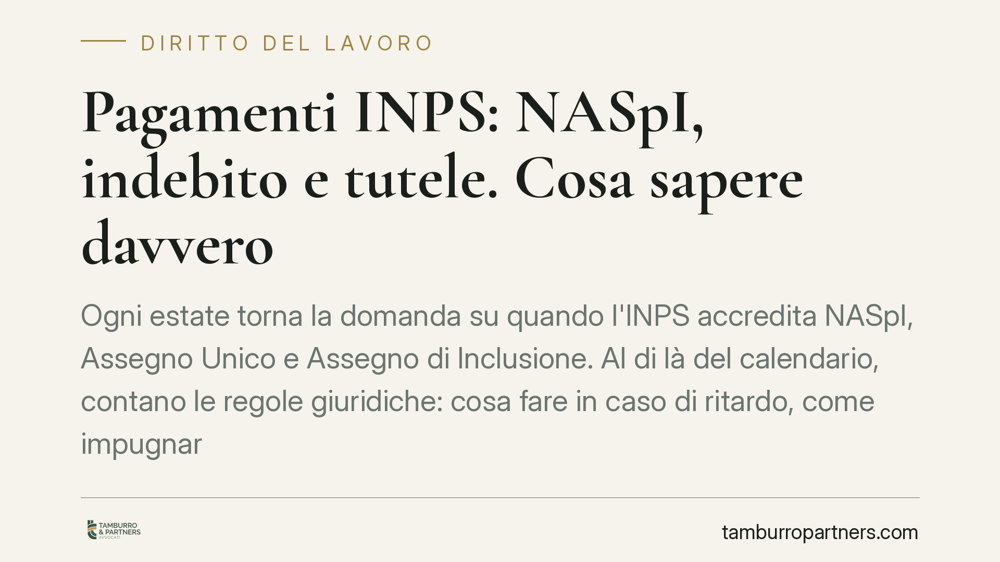
Ogni estate torna la domanda su quando l'INPS accredita NASpI, Assegno Unico e Assegno di Inclusione. Al di là del calendario, contano le regole giuridiche: cosa fare in caso di ri…
Molti amministratori si chiedono se installare un impianto fotovoltaico obblighi il condominio ad aprire la partita IVA. La risposta dipende da un criterio preciso: la destinazione…
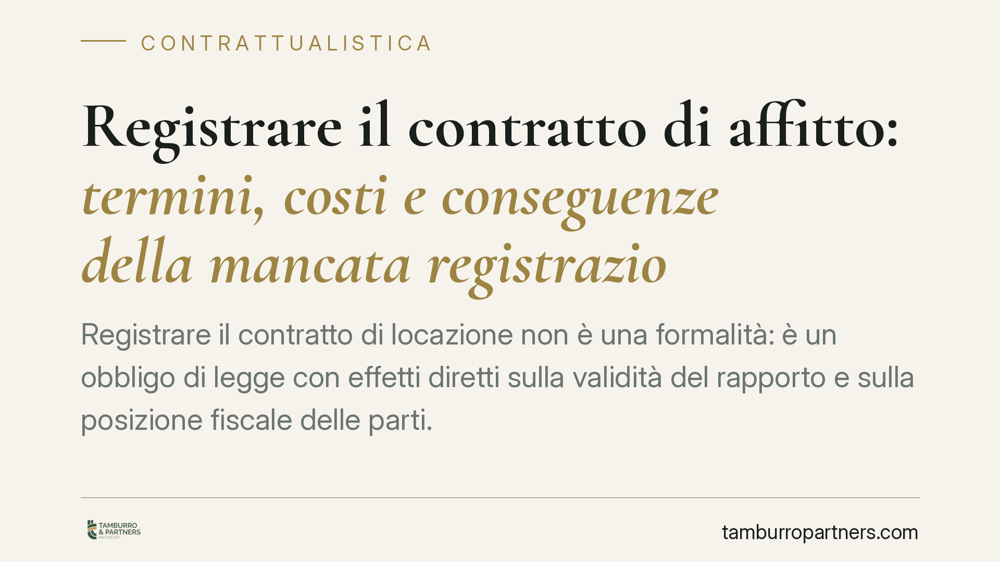
Registrare il contratto di locazione non è una formalità: è un obbligo di legge con effetti diretti sulla validità del rapporto e sulla posizione fiscale delle parti. Vediamo termi…
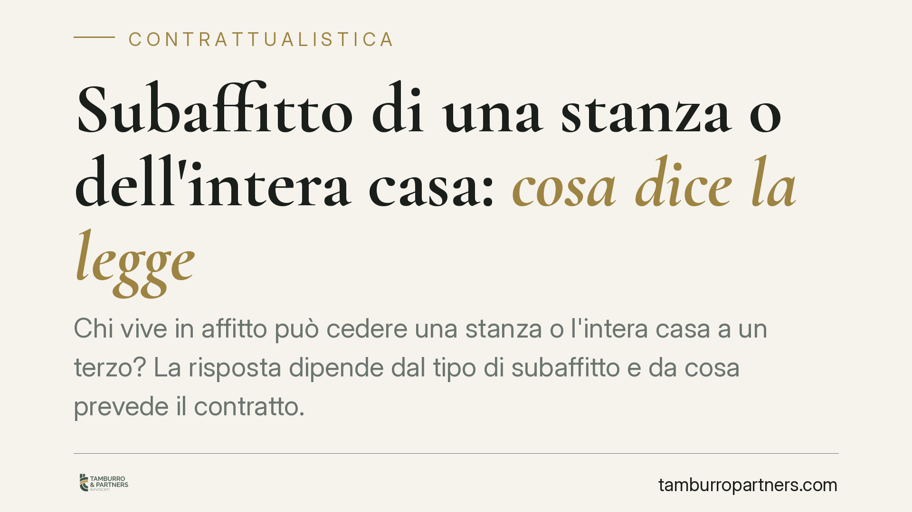
Chi vive in affitto può cedere una stanza o l'intera casa a un terzo? La risposta dipende dal tipo di subaffitto e da cosa prevede il contratto. Il Codice Civile fissa una regola g…
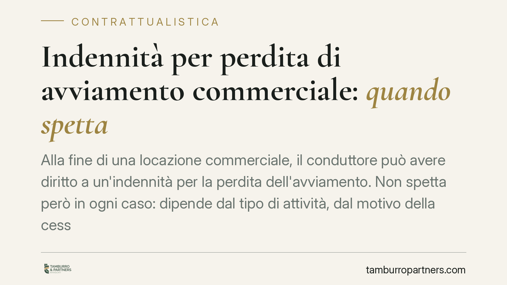
Alla fine di una locazione commerciale, il conduttore può avere diritto a un'indennità per la perdita dell'avviamento. Non spetta però in ogni caso: dipende dal tipo di attività, d…
Si torna a parlare di nuove forme di collaborazione tra avvocati: reti, associazioni e società. Prima di lasciarsi guidare dall'annuncio, conviene distinguere gli strumenti già dis…
Un posto barca lasciato vuoto per una stagione non azzera l'obbligo di pagare il canone. Una recente pronuncia del Tribunale di Roma ha ricondotto l'ormeggio allo schema della loca…
Il monitoraggio legislativo di inizio agosto 2026 segnala che in Parlamento si discute di norme incidenti sulla fiscalità degli Enti del Terzo Settore, con attenzione all'IRAP e al…
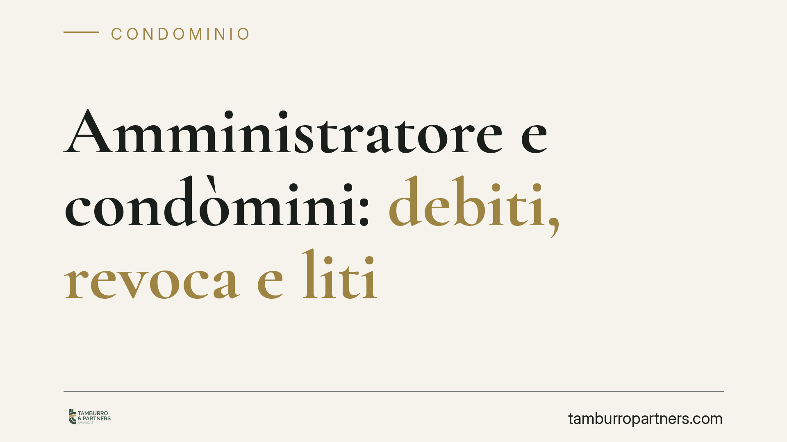
La gestione condominiale si muove su tre piani distinti: il recupero delle quote dai morosi, il controllo sull'operato dell'amministratore e i limiti alle azioni legali avventate. …
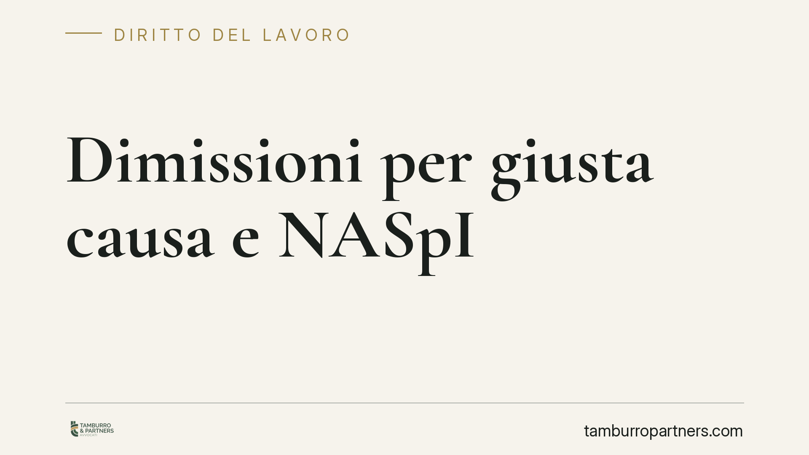
Chi si dimette perché costretto a fuggire da violenza o molestie sul lavoro non perde automaticamente la disoccupazione. Le dimissioni per giusta causa, se provate, aprono l'access…
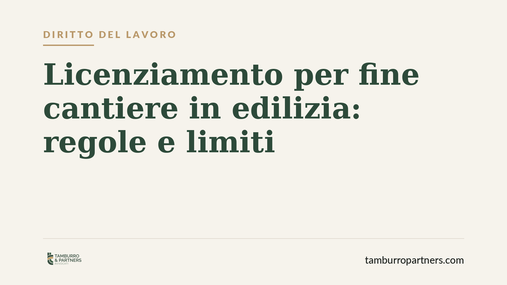
La conclusione di un cantiere non basta, di per sé, a giustificare ogni licenziamento in edilizia. Molto dipende dal tipo di assunzione e dalla posizione del lavoratore nell'organi…
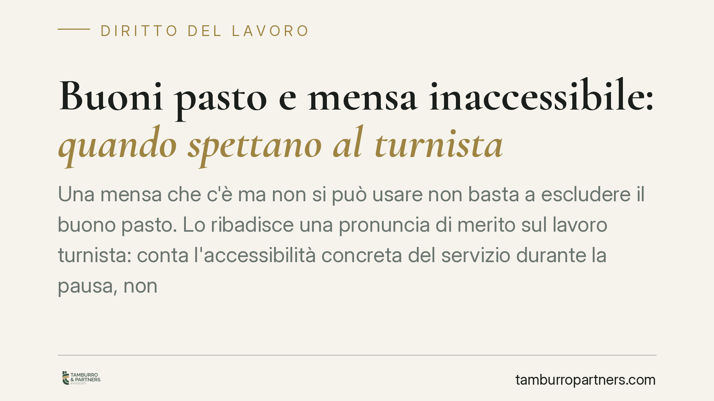
Una mensa che c'è ma non si può usare non basta a escludere il buono pasto. Lo ribadisce una pronuncia di merito sul lavoro turnista: conta l'accessibilità concreta del servizio du…
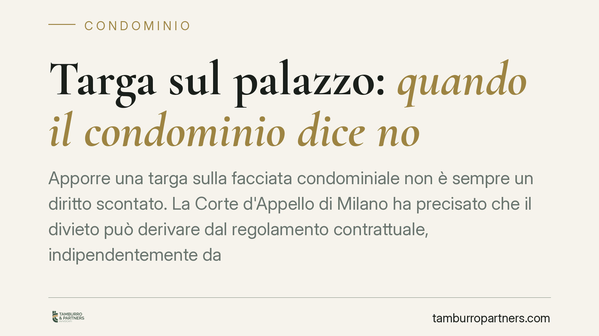
Apporre una targa sulla facciata condominiale non è sempre un diritto scontato. La Corte d'Appello di Milano ha precisato che il divieto può derivare dal regolamento contrattuale, …
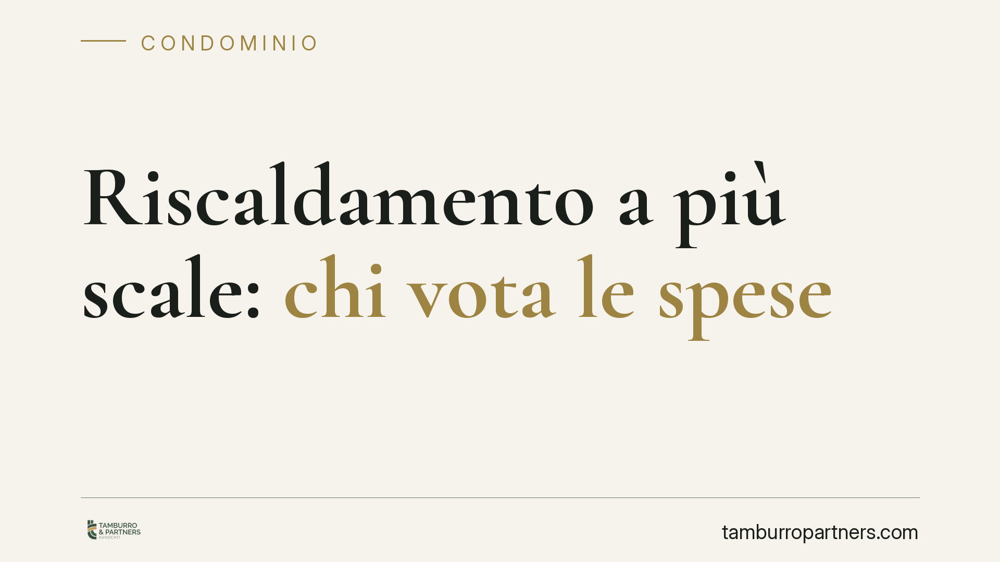
Nei condomìni articolati su più scale non tutte le spese riguardano tutti. Quando l'impianto di riscaldamento serve una sola scala, la delibera compete ai soli condòmini di quel co…
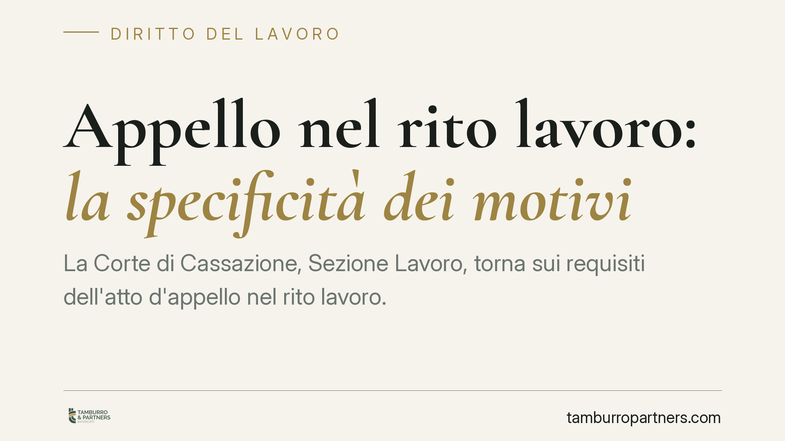
La Corte di Cassazione, Sezione Lavoro, torna sui requisiti dell'atto d'appello nel rito lavoro. Il messaggio è netto: non servono formule sacramentali, ma l'impugnazione deve indi…
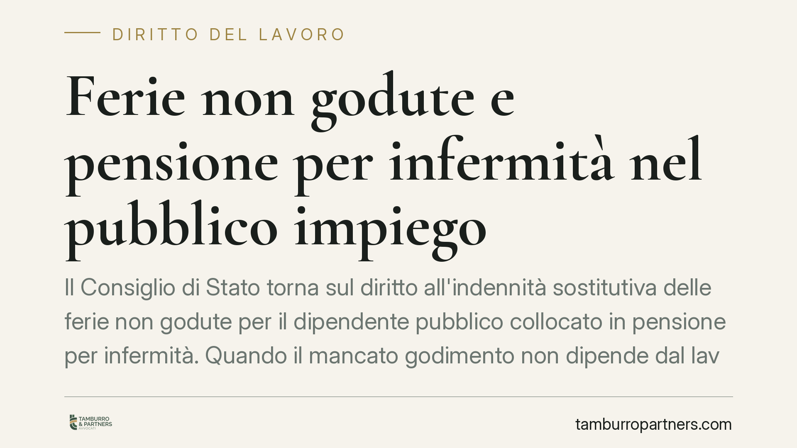
Il Consiglio di Stato torna sul diritto all'indennità sostitutiva delle ferie non godute per il dipendente pubblico collocato in pensione per infermità. Quando il mancato godimento…
Il Tribunale di Aversa affronta un problema ricorrente: l'INPS può chiedere indietro l'assegno sociale erogato in eccesso quando il limite reddituale è stato superato per prestazio…
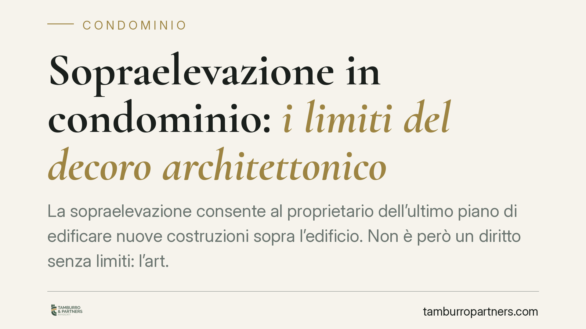
La sopraelevazione consente al proprietario dell'ultimo piano di edificare nuove costruzioni sopra l'edificio. Non è però un diritto senza limiti: l'art. 1127 del codice civile lo …
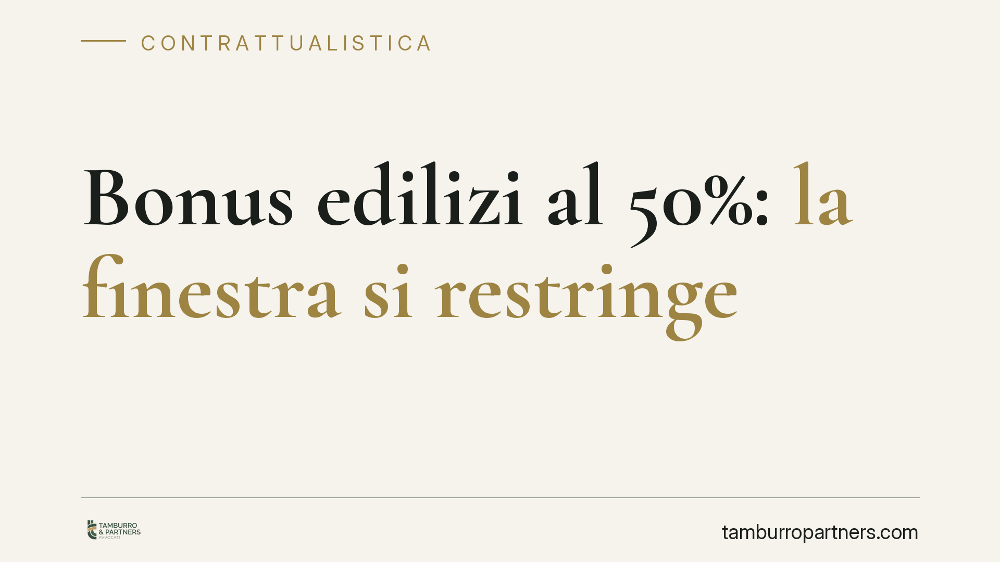
La detrazione per il recupero edilizio non è più uguale per tutti. Dal 2025 la legge distingue tra abitazione principale e altri immobili, con aliquote diverse e una prospettiva di…
Il lastrico solare ad uso esclusivo genera spesso contenzioso quando serve rifarne l'impermeabilizzazione. Chi paga? Il proprietario che ne gode in via esclusiva o anche i condomin…
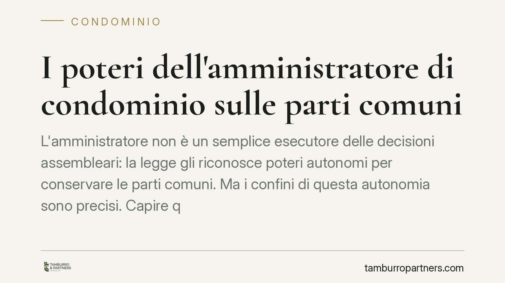
L'amministratore di condominio custodisce le parti comuni, ma i suoi poteri non sono illimitati. Alcuni interventi richiedono il via libera dell'assemblea, altri può assumerli in a…
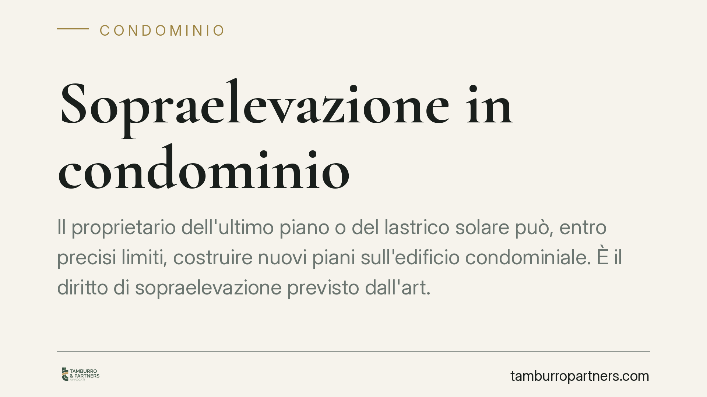
Il proprietario dell'ultimo piano o del lastrico solare può, entro precisi limiti, costruire nuovi piani sull'edificio condominiale. È il diritto di sopraelevazione previsto dall'a…
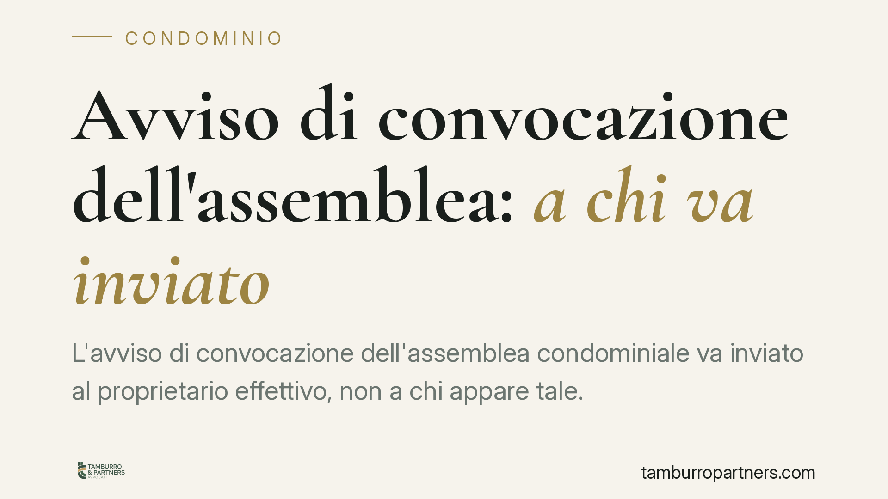
L'avviso di convocazione dell'assemblea condominiale va inviato al proprietario effettivo, non a chi appare tale. Il principio, ribadito dalla Cassazione, incide sulla validità del…
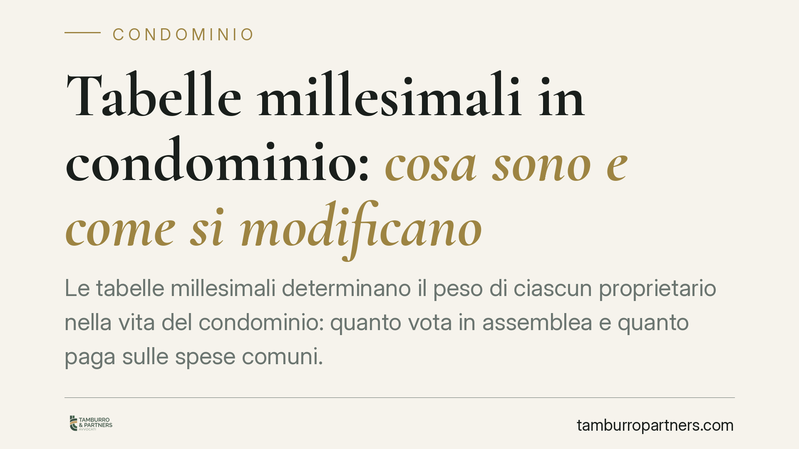
Le tabelle millesimali determinano il peso di ciascun proprietario nella vita del condominio: quanto vota in assemblea e quanto paga sulle spese comuni. Capire come funzionano, qua…
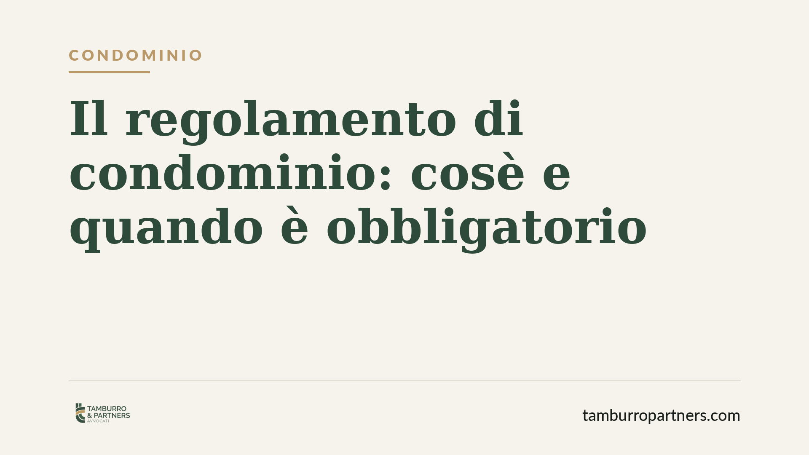
Il regolamento di condominio disciplina l'uso delle parti comuni e la ripartizione delle spese. Diventa obbligatorio quando i condomini superano il numero di dieci. Capire la diffe…
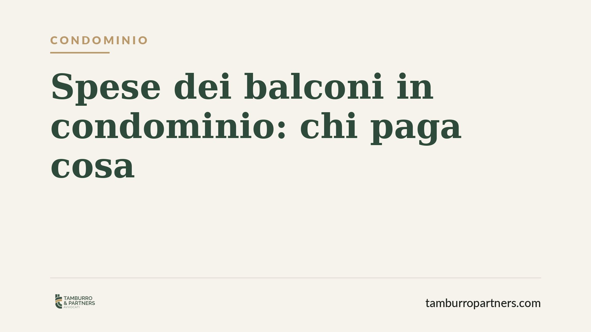
Le liti condominiali sui balconi nascono quasi sempre da un equivoco: non tutti i balconi seguono le stesse regole di spesa. La distinzione tra balcone aggettante e incassato cambi…
Il notaio non è un semplice testimone della firma. La legge gli affida controlli sostanziali che proteggono chi compra casa da ipoteche nascoste, pignoramenti e abusi edilizi. Capi…
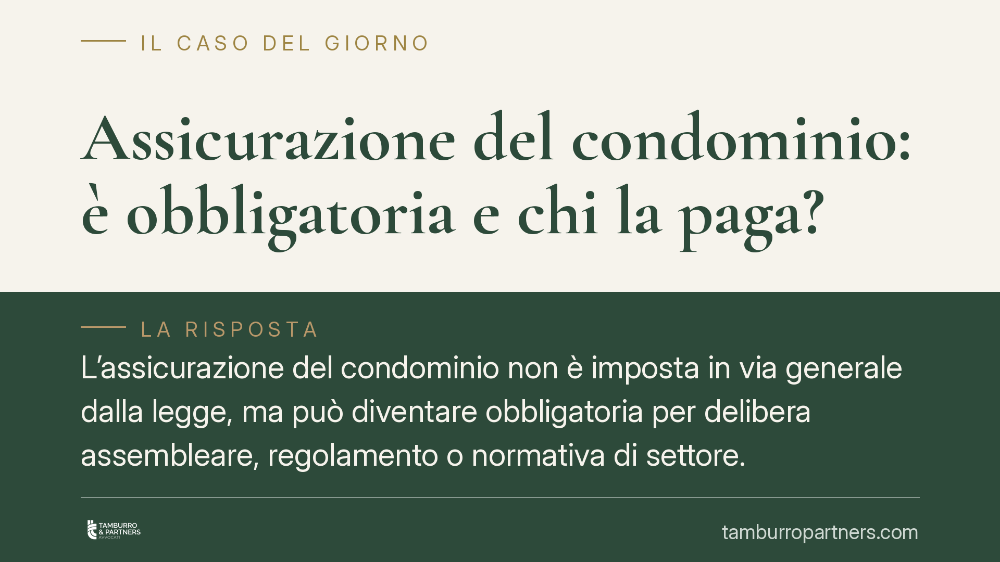
L'assicurazione del condominio non è imposta in via generale dalla legge, ma può diventare obbligatoria per delibera assembleare, regolamento o normativa di settore. Capire da dove…
Molti lavoratori scoprono tardi che la pensione sarà sensibilmente più bassa dell'ultima retribuzione. Il sistema contributivo lega l'assegno ai contributi versati e rivalutati, no…
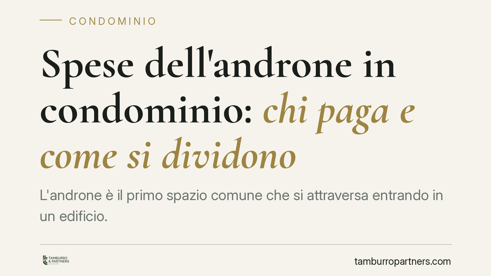
L'androne è il primo spazio comune che si attraversa entrando in un edificio. Proprio perché serve l'accesso alle unità, le sue spese di manutenzione ricadono su tutti i condòmini,…